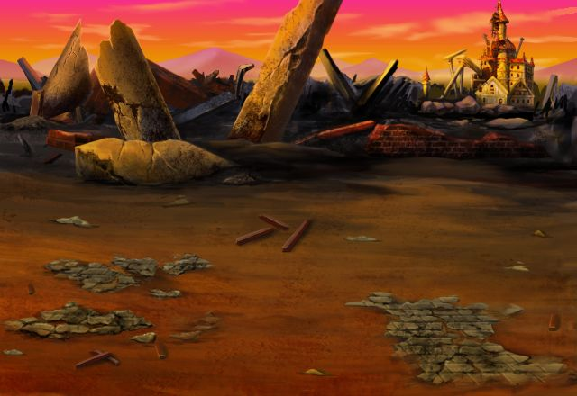

カル
セリアに押されるまま行っちまったから 怒ってるのかと思ったぜ。
カル
俺たちもリスティア神殿を 抜けてきたところだ。
セリア
ちょっと、アンタなんで 行く先々にうろちょろしてるのよ！？
セリア
ストーカーしてるんじゃ ないでしょうね！？
カル
だから意味もなく 突っかかるなって言ってるだろ！？
セリア
やたらとこいつをほめたたえる人間が いるのが気に入らないだけ！
カル
はぁ… それでケンカ売ってないって… 意味わかんねぇーよ。
カル
大体、Shou-chanは ここまで一人で来たんだぞ？
カル
常夜の森でもグレアムの配下を 倒してくれたから助かったし、
セリア
フンッ。 強いか弱いかなんて知らないわよ。
セリア
機嫌を取りに来るよーな奴にばっかり囲まれて、ずっとへらへらしてればいいんだわ！
カル
俺たちはこれからこの壊された聖堂を 乗り越えてモルガンの塔に向かうが…
カル
まぁ、無理に一緒に行っても 戦ってる時に悪影響とかありそうだし